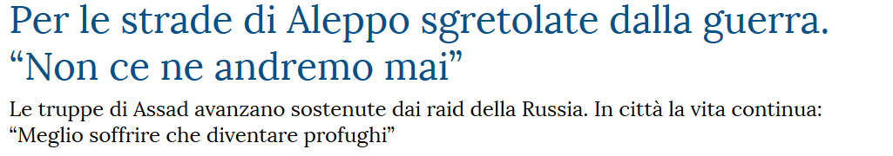
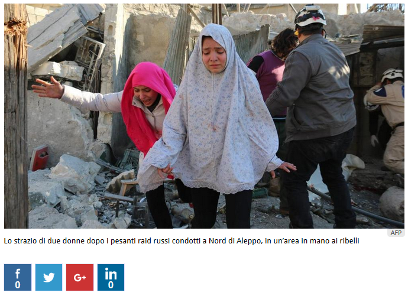
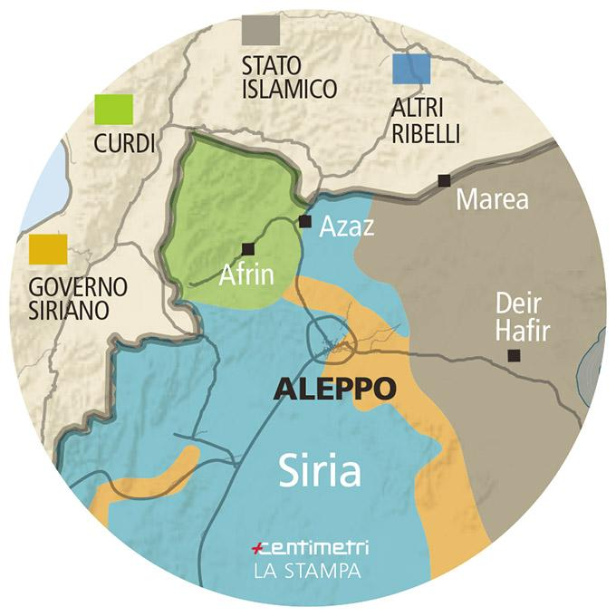
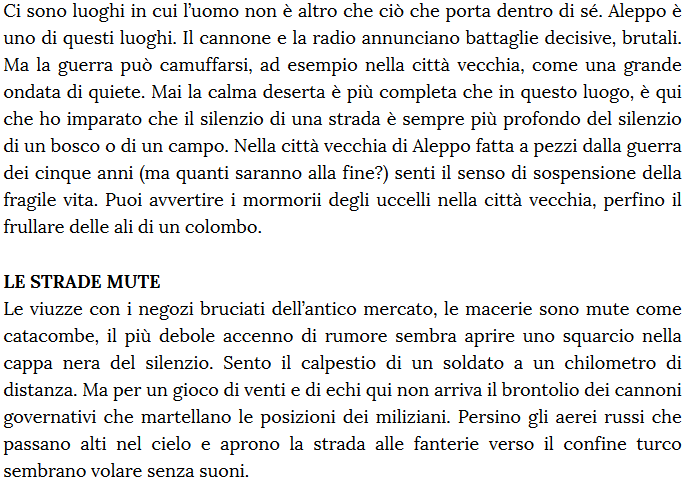
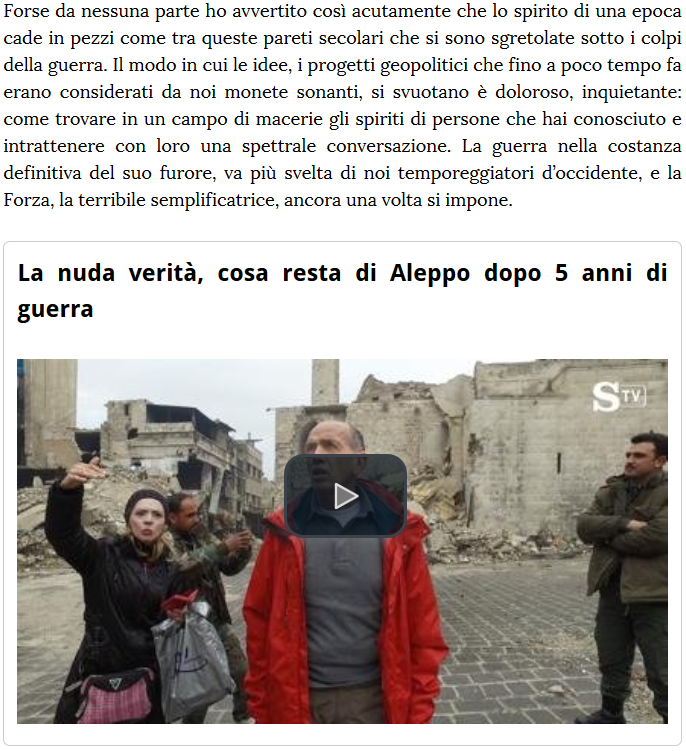
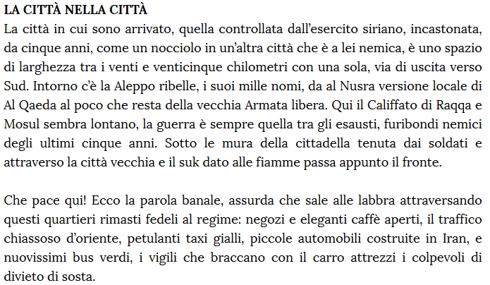
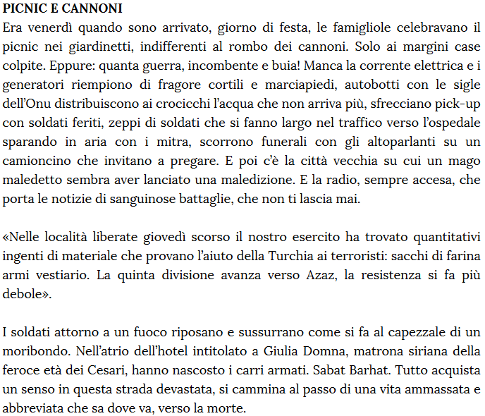
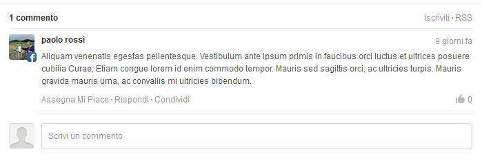
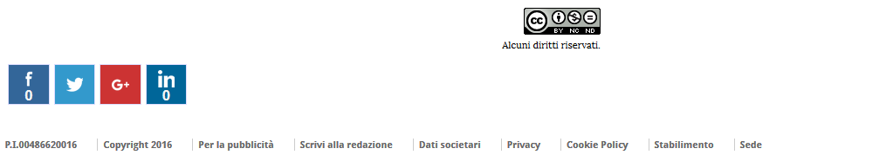

domenico quirico
inviato ad aleppo

09/03/2016




Fonti:
Siria: Sant’Egidio rinnova appello, “aiutare Aleppo a non morire” (onuitalia.com)
Battaglia di Aleppo (wikipedia.org)
La vita dei siriani cinque anni dopo l’inizio della guerra (internazionale.it)
Syria War - Insane Heavy Intense Urban Firefight Aleppo Syria (youtube.com)
Creato il:
20/03/2016 1:05
Pubblicato il:
21/03/2016 21:40
Ultimo aggiornamento:
22/03/2016 11:45
Versione:
3.7
Copyright:
La Stampa
Editor:
Guido Tiberga
Rivisto da:
Michele Brambilla
Hanno collaborato:
Alberto Infelise, Francesco Manacorda, Gianni Martini
Editore:
ITEDI s.p.a.
Invia una segnalazione

